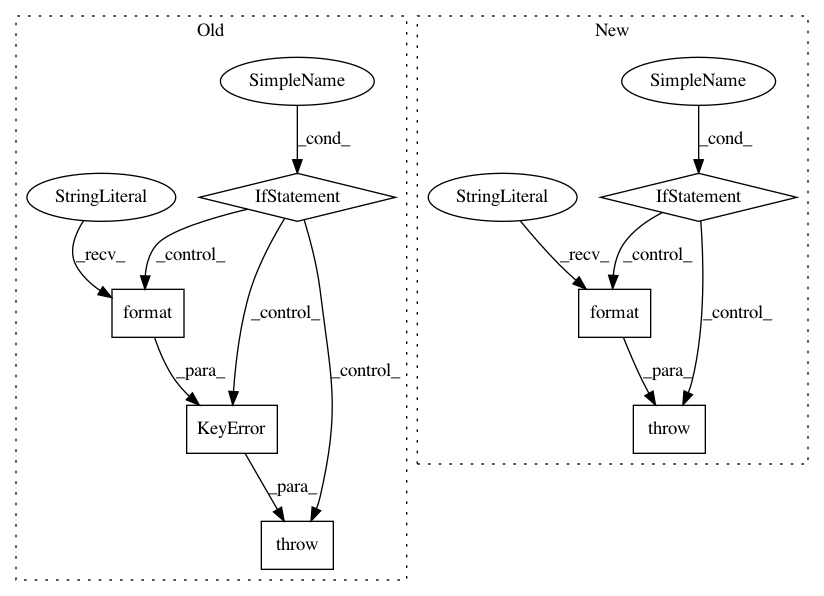

5f3e7ef013b7cecda55d9dd7fcc8f55cb01eee1b,pyinterpret/data/dataset.py,DataManager,__getitem__,#DataManager#Any#,161
Before Change
def __getitem__(self, key):
if not key in self.feature_ids:
err_msg = "The key {} is not the set of feature_ids {}".format(*[key, self.feature_ids])
raise(KeyError(err_msg))
return self.data.__getitem__(key)
def __setitem__(self, key, newval):
self.data.__setitem__(key, newval)
After Change
def __getitem__(self, key):
if self.data_type == pd.DataFrame:
return self.__getitem_pandas__(key)
if self.data_type == np.ndarray:
return self.__getitem_ndarray__(key)
else:
raise ValueError("Can"t get item for data of type {}".format(self.data_type))
def __setitem__(self, key):
if self.data_type == pd.DataFrame:
return self.__setitem_pandas__(key)
if self.data_type == np.ndarray:
In pattern: SUPERPATTERN
Frequency: 3
Non-data size: 7
Instances
Project Name: datascienceinc/Skater
Commit Name: 5f3e7ef013b7cecda55d9dd7fcc8f55cb01eee1b
Time: 2017-04-21
Author: aikramer2@gmail.com
File Name: pyinterpret/data/dataset.py
Class Name: DataManager
Method Name: __getitem__
Project Name: KaiyangZhou/deep-person-reid
Commit Name: 3cbeab42c246425425c584cd53f1cc25d8c738a7
Time: 2019-03-15
Author: k.zhou@qmul.ac.uk
File Name: torchreid/datasets/__init__.py
Class Name:
Method Name: init_vidreid_dataset
Project Name: KaiyangZhou/deep-person-reid
Commit Name: 3cbeab42c246425425c584cd53f1cc25d8c738a7
Time: 2019-03-15
Author: k.zhou@qmul.ac.uk
File Name: torchreid/datasets/__init__.py
Class Name:
Method Name: init_imgreid_dataset